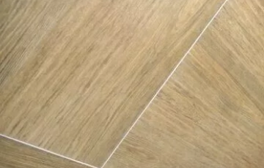
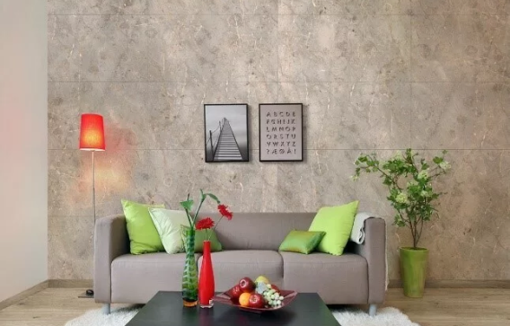
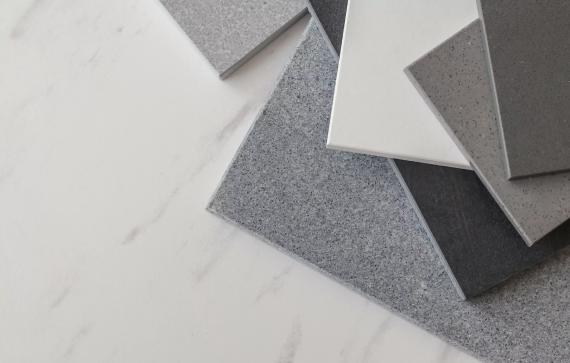
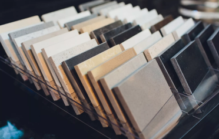

Хорошо выполненные плиточные работы означают в том числе идеально ровную поверхность и то, что все плиты находятся на одном уровне.

Ретифицированный керамогранит – какой он?
Планируя отделку квартиры, частного дома или офисного пространства, трудно остановиться на конкретном строительном материале.
Неглазурованный керамогранит: главные достоинства материала
Современные коллекции керамогранита – это произведение искусства.

Глазурованный керамогранит – запоминающийся дизайн в сочетании с профессиональным исполнением
В последнее время при выполнении отделочных работ в квартирах и домах всё большее предпочтение отдаётся глазурованному керамограниту.

Керамогранит: плюсы и разновидности
Керамогранит — популярная сегодня облицовка, материал, активно использующийся сегодня для отделки пола и стен. Как и любого другого отделочного материала, у него есть свои преимущества и недостатки, учитывая которые можно подобрать оптимальный для себя вариант керамогранитной плитки.

Керамогранит или керамическая плитка – что лучше?
Керамогранит и керамическая плитка являются лидерами продаж среди всех остальных отделочных материалов.
Что такое система СВП?
Хорошо выполненные плиточные работы означают в том числе идеально ровную поверхность и то, что все плиты находятся на одном уровне. Раньше для достижения такого результата использовались пластиковые крестики и спиртовой уровень. Они и сегодня ещё применяются, но им на смену пришло более эффективное приспособление, позволяющее выполнить работу быстро и на высоком уровне. Речь идёт о СВП – инновационной схеме выравнивания плит при укладке на стены и пол. Новшество пришло к нам с Запада, где систему успешно используют уже в течение долгого времени. Она подходит для укладки керамической плитки и керамогранита толщиной от 3 до 20 мм.
Для чего нужна система СВП?
Система выравнивания плитки повышает качество облицовки, позволяя сделать поверхность абсолютно ровной, не допустить перепадов высоты и предотвратить проседания. Кроме того, она даёт возможность значительно сократить затраты времени на укладку, тем самым повышая эффективность работы.
Как работает СВП?
Система устроена очень просто и включает в себя два вида элементов — клинья и зажимы, при этом первые можно использовать повторно (свыше пятидесяти раз).
Как правило, выравнивание плитки осуществляется следующим образом: зажимы ставятся в двух точках с каждой её стороны в 5 см от угла (плюс ещё одна по центру, если сторона длиннее одного метра). В результате соседние плиты оказываются прижаты к поверхности клина, что не даёт им смещаться, когда клей начинает высыхать.
Спустя сутки после того, как клей высохнет, зажимы можно отломить у основания с помощью резинового молотка, а клинья собрать для повторного применения.
Ниже представлена подробная иллюстрированная инструкция по использованию системы.
Какие преимущества у СВП?
Главное преимущество использование системы – автоматическое выравнивание двух смежных элементов по одному уровню, поэтому между ними не будет перепадов высот. Горизонтальная плоскость получается идеально ровной.
При усадке плиточного клея при высыхании облицовку не поведёт.
Зазоры получаются равномерными.
Значительно увеличивается скорость укладки, и даже у неопытного плиточника получается профессиональный результат. Помните, однако, о том, что сама по себе СПВ не заменит мастерства укладчика и не выровняет неправильно уложенную плиту.
Как пользоваться системой выравнивания плит? Инструкция по использованию:
- Размешайте и нанесите плиточный клей согласно инструкции на упаковке. При этом его консистенция не должна быть слишком густой или жидкой.
- Уложите плиту на клей и выровняйте её по уровню.
- С каждой стороны плитки установите по два зажима с отступом от угла пять сантиметров. Заметьте, что сэкономить и установить один зажим на четыре угла не получится, но иногда можно поставить один зажим на две смежных плиты.
- Уложите пластиковые крестики по углам для сохранения равномерного зазора.
- Уложите смежную плиту вплотную к ножке зажима.
- Вставьте клин в зажим таким образом, чтобы он плотно прилегал к поверхности обеих плит, — за счёт этого перепад между краями нивелируется.
- Когда клей полностью высохнет, удалите клинья и верхнюю часть зажима. Это делается лёгким ударом резиновой киянкой, при этом нижняя часть зажима останется внутри.
Как определить расход СВП?
Чтобы воспользоваться СВП, для начала необходимо снять замеры помещения, выбрать размер плит и высчитать количество зажимов и клиньев, которые понадобятся для фиксации. Для подсчёта среднего расхода необходимо число точек на две смежные стороны плитки разделить на площадь одной плиты. По таблице видно, что чем меньше размер, тем выше получается расход и, следовательно, затраты на использование СВП в укладке. Поэтому выгоднее всего использовать систему выравнивания для работы с крупноформатным керамогранитом размером 600х600, 1200х600, 1200х1200 мм – не в последнюю очередь потому, что без неё ровно уложить керамогранит такого формата крайне затруднительно (если вообще возможно) даже опытному плиточнику.
Из соображений экономии некоторые мастера используют на стыке четырёх плит один зажим вместо четырёх. Такой подход работает, только если есть уверенность, что все они идеально равной толщины. Тем не менее, после высыхания клея всё равно можно столкнуться с неприятными сюрпризами. Конечный результат может разочаровать, а с учётом вероятной цены переделки попытка сэкономить может обернуться дополнительными тратами. А так как нам необходим идеально ровный пол, то экономия здесь не оправдана.
Формат керамогранита, мм Средний расход зажимов СВП на м2
Где и как купить СВП?
Товар всегда есть в наличии в офисах продаж дистрибьюторов «Уральский гранит». Обратите внимание, что мы продаём только оригинальную систему выравнивания петербургского производителя. На рынке нередко можно встретить подделки, имитирующие форму и расцветку оригинала, но они зачастую отличаются низким качеством.
Ретифицированный керамогранит – какой он?
Планируя отделку квартиры, частного дома или офисного пространства, трудно остановиться на конкретном строительном материале. Но главный критерий остаётся неизменным – это визуальная привлекательность. Поэтому на рынке облицовочных покрытий огромной популярностью пользуется ретифицированный керамический гранит. С первого взгляда может показаться, что это обычный керамогранит, но он обладает одной яркой особенностью, которая и отличает его от других керамических покрытий.
Перед тем, как попасть к конечному потребителю, ещё на фабрике керамогранитные плиты подвергаются не только обжигу, калибровке и множеству испытаний на прочность и морозостойкость, но и ретификации. Это достигается в процессе дополнительной обработки готовой плиты для придания ей единого размера в каждом формате. После этого изделия получают точные параметры с допуском отклонений не более 0,4 мм. Ретифицированные плиты – близнецы, поэтому они не нуждаются в калибровке. Это в итоге позволяет укладывать облицовочный материал практически без видимых швов и создавать уникальные интерьерные и экстерьерные композиции с потрясающими визуальными эффектами.
Ретифицированные плиты укладываются без расширенных швов – из-за этого их и называют бесшовными. Но, несмотря на это, ровные края не дают возможность создавать однородную поверхность, как думают многие покупатели. Это происходит из-за того, что укладка плит совершенно без швов несёт большой риск – например, плиты расширяются или сужаются во время перемены температур и даже могут треснуть. Швы и щели позволяют минимизировать возникающее напряжение. Полностью бесшовная укладка – это ошибка в строительном мастерстве, которая представляет собой серьёзную опасность, грозящую облицовке потенциальными повреждениями.
Обрезной ретифицированный керамогранит необходимо укладывать с максимально приближённым расположением одного элемента к другому. Такая укладка эффектно смотрится и на поверхностях значительной площади и в небольших помещениях. Применение ретификата и его кладка стык-в-стык позволяет визуально увеличить пространство, раздвинуть его границы.
Неглазурованный керамогранит: главные достоинства материала
Современные коллекции керамогранита – это произведение искусства. Дизайнеры и технологи на производстве добиваются удивительных эффектов, выпуская декоративные плиты с превосходными характеристиками и отличным внешним видом. Но встречаются ситуации, когда важнее не эстетическая привлекательность поверхности, а её эксплуатационные свойства. В таком случае выбор падает на неглазурованный (его ещё называют техническим) керамогранит.
Отличия неглазурованного керамогранита от его декоративных разновидностей заключаются в деталях, касающихся конкретного продукта, а не всей технологии.
Поверхность неглазурованного керамогранита почти не подвергается дополнительной обработке после обжига. Этот матовый неглазурованный искусственный камень в отличие от полированного керамогранита имеет грубую фактуру и превосходно сопротивляется скольжению.
Цветовая гамма здесь не отличается разнообразием. Неглазурованный керамогранит менее вариативен, окрашен в неяркие однотонные оттенки, нередко – по принципу «соль-перец». В последнем случае в структуру плиты равномерно добавляют вкрапления чёрного и белого цветовых пигментов, которые создают монотонный однородный рисунок.
Износостойкость неглазурованного керамогранита увеличивается благодаря гомогенности цветовых решений и окраске во всю глубину. Окрашенные в массе коллекции – моноколоры — сохраняют вид даже при сверхинтенсивной эксплуатации, когда стирается несколько миллиметров верхнего слоя плиты. По шкале Мооса (используется для тестирования свойств природного камня) неглазурованный керамогранит набирает 8-9 баллов.
Толщина неглазурованного керамогранита составляет не менее 8-9 мм. А плиты толщиной в 10-12 мм называют усиленным керамогранитом.
Размеры плит могут быть не только традиционного для напольного покрытия формата – 600х600 мм, но также и 300х300 мм. Малые размеры позволяют уменьшить при укладке количество воздушных пузырей под покрытием, что ещё сильнее повышает прочность и надёжность поверхности.
Стоимость неглазурованного керамогранита зачастую ниже его декоративных «собратьев». Лаконичная цветовая гамма и упрощённая технология производства дают возможность оптимизировать затраты и снизить конечную цену готового продукта.
Защита от воздействия любых природных факторов: техническому керамограниту не страшны влага, огонь, мороз, кислоты и щёлочи.
Сферы применения неглазурованного керамогранита:
Такая напольная отделка прекрасно зарекомендовала себя в помещениях, требующих долговечного, простого в уходе покрытия.
Это практичное решение для комнат с большой влажностью и перепадами температур.
Неглазурованный керамогранит остаётся востребованным в местах с высокой проходимостью — аэропортах, вокзалах, офисных зданиях.
Это также настоящая находка для лабораторий: в местах возможного контакта пола с химической средой керамогранит актуален, как никогда.
Облицовка фасадов, цоколей зданий.
Разновидности неглазурованного керамогранита:
По внутренней структуре неглазурованный керамогранит идентичен камню. Многие производители научились делать имитацию любых каменных пород – от кварца до мрамора.
В зависимости от типа поверхности, материал может быть полированным, полуполированным, неполированным или лощёным.
С помощью специального станка, оборудованного алмазным резцом, керамогранит нарезают на элементы различных форм и размеров. Это могут быть бордюры, ступени, различные вставки.
Огромное разнообразие позволяет выбрать оптимальный вариант для обустройства дома, офисного или другого общественного здания.
Глазурованный керамогранит – запоминающийся дизайн в сочетании с профессиональным исполнением
В последнее время при выполнении отделочных работ в квартирах и домах всё большее предпочтение отдаётся глазурованному керамограниту. Такая популярность обеспечивается высокими характеристиками и привлекательным внешним видом данного материала.
Что представляет из себя глазурованный керамогранит? Это грес (плита без эмали), на поверхность которого нанесено декоративное покрытие из сверхпрочного стекла — смальты. Поверхность плиты покрывают специальным составом, который отвердевает при обжиге. Таким образом изготовление изделия схоже с методом двойного прессования, когда на основу керамогранита, окрашенного по типу «соль-перец», запрессовывают материал, придающий рисунок, с той лишь разницей, что верхний заменяет глазурь. В результате изделие приобретает сверкающий вид и глубокий цвет. И раз глазурь отличается большим разнообразием цветов и оттенков, то цветовая палитра полученного изделия не ограничена. В результате потребитель получает облицовочный материал, обладающий рядом неоспоримых преимуществ.
Для того, чтобы учесть все положительные и отрицательные стороны глазурованного керамогранита, обозначим их тезисно. Плюсы состоят в следующем:
- высокая прочность и износостойкость;
- большой выбор дизайнерских решений;
- устойчивость к грибку и плесени;
- неприхотливость в уходе;
- термо- и гидроустойчивость;
- доступная цена.
На первый взгляд кажется, что керамогранит не имеет минусов. Это почти так и есть, но несколько незначительных недостатков, которые следует учесть при выборе данного материала, всё же стоит озвучить. Несмотря на относительную прочность, данный материал всё-таки на 100% не защищен от механических повреждений. Также со временем он имеет свойство стираться. Используя керамогранит для отделки жилых помещений, следует также помнить, что он достаточно холодный.
Характеристика, указывающая насколько устойчива глазурь, называется PEI. Она бывает от трёх до пяти. Последняя — самая износостойкая. При PEI 5 материал можно использовать в любом помещении жилого интерьера и даже в небольших по проходимости коммерческих заведениях. При PEI 4 материал можно применять только в жилом интерьере и желательно только там, где не ходят в уличной обуви, то есть в прихожую укладывать не желательно. Если у керамогранита характеристика PEI 3, то его не рекомендуется укладывать никуда, кроме ванной комнаты или санузла.
Что касается ухода за глазурованным керамогранитом, то он известен как неприхотливый в уходе материал. Но, несмотря на всю его стойкость к механическим и химическим повреждениям, лучше исключить те моющие средства, которые содержат абразивные элементы: они могут негативно повлиять на само покрытие, способствуя нарушению структуры и ухудшению внешнего вида.
Огромное преимущество глазурованного покрытия керамического гранита состоит в большом разнообразии текстур, оттенков и дизайнов готовой плиты. В итоге конечный продукт обладает идеальными эстетическими свойствами и призван решать самые оригинальные дизайнерские задачи для воплощения в жизнь любых дизайн-проектов.
Керамогранит: плюсы и разновидности
Керамогранит изготавливается из беложгущейся глины и каолины, кварцевого песка, полевой шпаты и пегматиты.
Плюсы керамогранита:
- Низкое водопоглощение: Идеален в качестве материала для облицовки стен, полов, кухни и ванной комнаты.
- Прочный и износостойкий материал: Отлично подходит для покрытия полов в высокопроходимых зонах.
- Гигиеничность: Плотная структура не впитывает грязь, масло, поэтому на поверхности не размножаются бактерии.
- Легкость в уходе: Легко очищается и поддается уходу, что делает его идеальным выбором.
- Является долговечным материалом: При должном уходе длительное время может выглядеть как новый, даже после многих лет эксплуатации.
- Дизайнерские возможности: Доступен в широком спектре цветов, текстур и рисунков для создания уникальных дизайнерских решений.
- Существуют разные типы керамогранита, включая глянцевый, матовый, искусственный мрамор, камень и т.д. Каждый тип имеет свои уникальные характеристики и особенности, что делает его подходящим для разных стилей интерьера.
Разновидности керамогранита:
Матовая (MR)
Ровная поверхность, шероховатая на ощупь. Поверхность защищена протекцией, проста в уходе, легко моется
Полированная (PR)
Поверхность идеально гладкая, глянцевая. В зависимости от коллекции рисунок на керамограните с такой поверхностью может проявляться более эффектно, а цвет быть более насыщенным. Для защиты от загрязнений покрыта специальным наносоставом. В процессе эксплуатации требуется дополнительный уход.
Лаппатированная (LR)
Полировке подвергаются только верхушки рельефа: до состояния, когда на поверхности остаются неполированные участки. Защищена от загрязнений специальным составом (кристалиной) и легко обработана специальными абразивами на линии полирования. Износоустойчива.
Мягкое лаппатирование (LMR)
Поверхность гладкая, приятная при прикосновении. Защищена протекцией и мягко обработана специальными абразивами на линии полирования, что позволяет поверхности сохранить небольшой рельеф и приобрести приятный отблеск при попадании на нее света. Легко моется.
Рельеф (Relief)
Рельефная поверхность достигается путем специальной обработки заготовки прессом до его отправки в печь. В результате получается поверхность, идеально повторяющая натуральный камень.
Структурная поверхность (SR)
Поверхность рельефная, с неровностями. Защищена от загрязнений специальным составом (кристалиной). Легко моется.
Антискользящая поверхность (ASR)
Шероховатая на ощупь. На поверхность до обжига наносят специальный прочный, стойкий к истиранию материал. Обеспечивает эффект против скольжения не только на сухой, но и на мокрой поверхности.
Одним из основных плюсов керамогранита также является устойчивость к воздействию высоких температур, химическим веществам и механическим повреждениям, что делает его выбором №1 для кухни или ванной комнаты. Кроме того, керамогранит отличается устойчивостью к внешним воздействиям, таким как свет и влажность, что позволяет ему выглядеть как новым на протяжении многих лет.
В заключение, керамогранит - это высококачественный, долговечный и гигиенический материал, который предлагает множество дизайнерских возможностей и идеально подходит для любого интерьера. Независимо от того, ищете ли вы материал для кухни, ванной комнаты или другого помещения, керамогранит предлагает вам безупречный выбор для любых потребностей.
Керамогранит или керамическая плитка – что лучше?
Керамогранит и керамическая плитка оба являются типами керамических покрытий, но они отличаются по основным характеристикам:
Состав и структура:
Керамогранит является более плотным и твердым материалом, чем керамическая плитка. Он производится из беложгущейся глины и каолины, кварцевого песка, полевой шпаты и пегматиты, которые проходят два этапа формирования: пресс-форма и далее обжигаются в печи. Это придает керамограниту более однородную и плотную структуру, которая делает его прочным и износостойким.
Использование:
Керамогранит, благодаря своей прочности, может использоваться как внутри помещений, так и на открытом воздухе, включая фасады зданий и полы в общественных зданиях. Керамическая плитка чаще используется внутри помещений на стенах и полах в ванных комнатах, кухнях и т.д.
Цена:
Керамогранит стоит дороже, чем керамическая плитка. Это связано с высокой сложностью производства, более высокими технологическими требованиями и процессом установки.
Таким образом, хотя керамогранит и керамическая плитка могут выглядеть похожими на первый взгляд, они имеют свои уникальные характеристики, которые могут влиять на выбор материала для конкретного проекта.
Прочность:
tehnicheskie_harakteristiki_page-0001.jpg
Керамогранит соответствует требованиям и норм ГОСТ 57141-2016, завод ООО «ЗКС» производит ТУ 5752-001-56380351-2007 показатели выше требований ГОСТ что говорит о качестве производимого продукта.
Керамогранит является одним из самых прочных материалов для покрытия пола и стен. Это связано с его плотной и однородной структурой, которая делает его износостойким, устойчивым к ударам и царапинам, а также устойчивым к агрессивным химическим веществам
Керамическая плитка имеет хорошую износостойкость, устойчивость к царапинам и ударам, а также химическую устойчивость. Кроме того, она не впитывает воду и легко моется, что делает ее идеальным материалом для использования в ванных комнатах, кухнях и других местах, где важна гигиена.
Однако, керамическая плитка менее прочна, чем керамогранит, так как она имеет более пористую структуру. Это означает, что она склонна к сколам и трещинам при ударах или нагрузках, особенно на краях и углах. Кроме того, керамическая плитка подвержена износу при высокой проходимости, поэтому для помещений с большим потоком людей рекомендуется использовать более прочный материал, такой, как керамогранит.
Важно отметить, что правильная установка керамической плитки, использование качественных клеев и регулярное обслуживание также могут продлить ее срок службы и сохранить ее прочность.
Декоративные свойства:
Керамогранит, как материал, предлагает широкие возможности для декоративного оформления помещений. Он может имитировать различные виды камня, мрамора, дерева, металла и других материалов. Керамогранит может иметь различные оттенки, фактуры, рисунки, отполированную или матовую поверхность, а также различные размеры и формы.
С помощью керамогранита можно создавать разнообразные декоративные эффекты. Например, его можно использовать для создания мозаичных панелей, украшения фрагментов стен или полов. Керамогранит также может использоваться для создания узоров или графических рисунков, которые могут подчеркивать особенности дизайна интерьера.
Керамогранит может быть использован для оформления стен, пола, потолка и других поверхностей в интерьере, а также для создания наружных фасадов и декоративных элементов. Кроме того, его можно использовать в различных комбинациях с другими материалами, такими как стекло, металл или дерево, для создания уникального дизайна.
В целом, керамогранит является декоративным и универсальным материалом для интерьера и экстерьера. Он предлагает большое количество возможностей для творческого дизайна и декорирования различных поверхностей.
Керамическая плитка также может иметь декоративные свойства, хотя они могут быть ограничены в сравнении с керамогранитом.
Керамическая плитка имеет различные оттенки, фактуры, рисунки и графические элементы, которые могут быть использованы для создания декоративных эффектов. Она также может имитировать различные материалы, такие как камень, дерево, металл, и т.д., что позволяет создавать уникальные дизайнерские решения.
В целом, керамогранит и керамическая плитка являются универсальными материалами, которые могут использоваться в различных областях благодаря своим прочностным и декоративным свойствам.